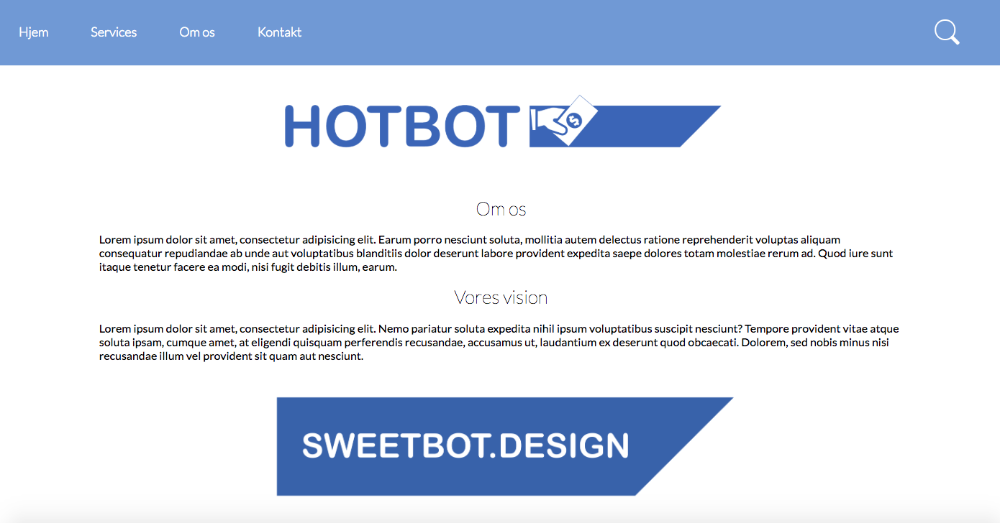
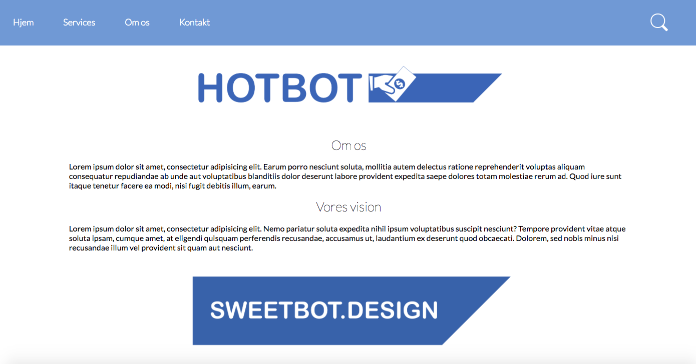

I dette flow blev vi stillet den opgave, at vi skulle designe og kode hjemmesiden for den fiktive virksomhed Sweetbot. Opgaven har vi lavet sammen i en gruppe af fire personer. Vi har i den forbindelse arbejdet med HTML, CSS, JavaScript og jQuery. Ydermere har vi udarbejdet ikoner og logo til hjemmesiden vha. Illustrator og Photoshop. Dette er også det første projekt, hvor vi har arbejdet med responsivt design, hvilket vil sige hjemmesiden er fungere til både mobil og web.
 

Vi har valgt individuelt i gruppen selv at medføre de ændringer, som vi finder passende på siden til den forbedrede nye version. På forsiden har jeg valgt at udskifte billederne med de ikoner vi har arbejdet med. Dette er med henblik på at brugeren af hjemmesiden får den samme opfattelse af, hvilket produkt de kigger på uanset hvilken en af siderne de befinder sig på.
På flere af siderne har vi også haft problemer med vores overskrifter, som ikke alle har den samme skrifttykkelse. Derfor har jeg givet dem alle en fed "Lato" skrifttype, da det harmonerer bedre med paragrafferne. Udover det har jeg også rettet i sidens margin så alle overskrifter er centreret i midten på både mobil og web. Sidst har jeg ændret i paragraffernes længde på siden og gjort den mere læsevenlig, fremfor de lange sætninger vi før havde på enkelte sider.
Logoets placering har vi også misforstået lidt. På siden er det meningen, at det er Sweetbots logo der er fremtræden og hvor HotBot forekommer i betalingsdelen af hjemmesiden. Dette har jeg selvfølgelig ændret, så det fremstår klart på alle sider. På kontaktsiden havde vi også lavet et mindre ikon, som illustrere support. Dette har jeg rettet placeringen på så den bliver i midten uanset websidens størrelse. Søgefeltet har jeg også rettet så det bliver mindre når der ændres i websidens størrelse.
På betalingssiden hvor HotBots funktion forekommer har jeg indsat et Sweetbot logo øverst. Dette er for, at brugeren kan klikke på billedet for at komme tilbage til hjemmesiden. Før dette havde vi kun en annulleringsknap nederst. I vores brugertest og ved fremlæggelsen havde vi nogle der betvivlede funktionen af denne. Derfor er der nu to måder at vende tilbage til hjemmesiden på. Billedet sender en tilbage til forsiden, hvor annulleringsknappen sender en tilbage til indkøbskurven.